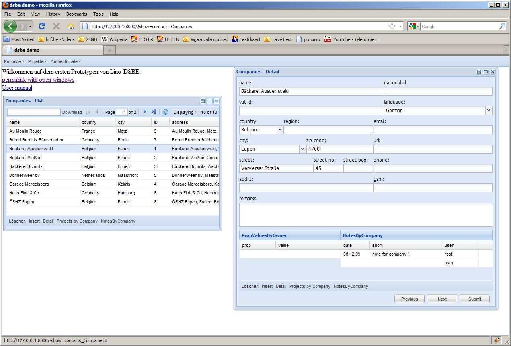

= [20100207 Arbeitsbericht] =
Mann, das war nicht einfach, dass die Slave Grids nicht mehr die Textfelder verdrängen! Die Lösung ist, alle VBoxLayout durch FormLayout und alle HBoxLayout durch ColumnLayout zu ersetzen. Und natürlich in den Kindern dann nicht mehr flex zu benutzen, sondern anchor bzw. columnWidth.
Nachdem ich die [20100206 Frage] im ExtJS-Forum gestellt hatte, kam die Antwort kurz darauf von einem Programmierer aus Miami, und das war nur ein Satz. Aber allein die Frage zu stellen hat mich einige Stunden gekostet. Die anschließende Integration in Lino war dann dagegen überraschend einfach.
Momentan haben die Slave Grids autoWidth=True (bin nicht sicher, ob das so bleiben kann) und reagieren noch nicht auf Klicks, aber ich bin zufrieden.
Beim Arbeiten in dsbe.fixtures.demo.dpy wird mir klar, dass für LinoDsbe noch etwas Wichtiges fehlt. Das Besondere an LinoDsbe ist, dass dort enorm viele Informationen zu einer Person gespeichert werden. Um das zu bewältigen, sehe ich 2 Möglichkeiten:
- die “doofe” Methode: viele Felder im Person model, und dann ein Eingabeformular mit Reitern und eventuellem sonstigem Pipapo, um Struktur in die Daten zu bringen. Das hätte seine Reize, ich habe noch nie mit so vielen Datenfeldern gearbeitet.
- die “komplizierte” Methode: mit dem Eigenschaften-Editor in [LinoModlibProperties lino.modlib.properties]. Das wäre natürlich am wiederverwertbarsten.
Das Problem ist, dass [LinoModlibProperties lino.modlib.properties] dann noch die Fähigkeit kriegen muss, auch andere Datentypen als Text zu speichern: Logical, Boolean, Integer usw...). Dazu muss ich wahrscheinlich Unterklassen von PropValues anlegen (BooleanPropValues, IntegerPropValues usw.). Und als Editor reicht hoffentlich der [http://www.extjs.com/deploy/dev/docs/?class=Ext.grid.PropertyGrid Ext.grid.PropertyGrid].
Das Modell PropChoice kommt weg und stattdessen ist PropValue.owner jetzt nullable. Eigenschaften holen ihre Auswahlliste aus ihrer PropValue, und zwar par convention diejenigen, deren owner None ist.

{kind=link}